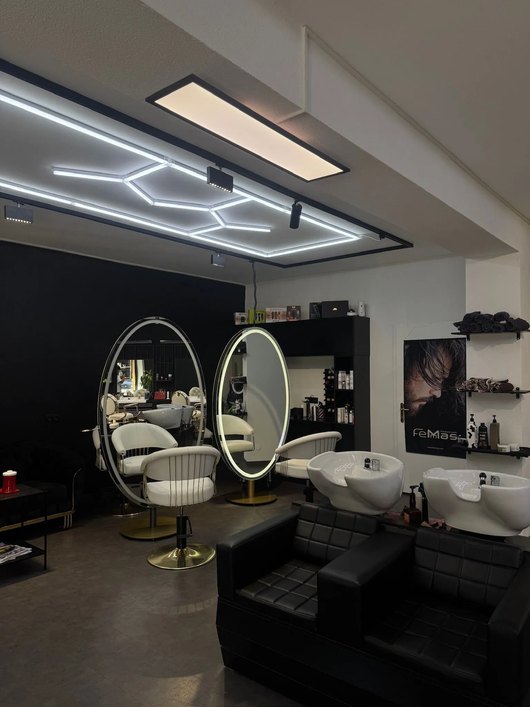

Friseur in Fügen
Kein Termin. Einfach vorbeikommen, Dorf-Platz 1.
Am Dorf-Platz, mitten im Ort.
Von außen Holz und ein Fenster mit dem Berg darauf.
TODO: zwei bis drei Sätze über den Salon

Länge
Herren
6 mmRegler nach oben zeigt die Damenpreise.
| Maschinenhaarschnitt | 16 € |
|---|---|
| Musterhaarschnitt | 6 € |
| Bartrasur | 10 € |
| Maschinenbartrasur | 13 € |
| Musterbartrasur | 15 € |
| Waschen, Schneiden, Föhnen | 26 € |
| Waschen und Föhnen | 8 € |
| Wachs | 8 € |
| Black Mask | 8 € |
| Kopfmassage | 5 € |
Zuordnung noch nicht bestätigt
| Behandlung | Kurz bis Ohr |
Mittel bis Schulter |
Lang ab Schulter |
Extra lang bis Linie |
|---|---|---|---|---|
| Waschen & Föhnen | 25 € | 45 € | 55 € | 65 € |
| Waschen & Legen | 45 € | 55 € | 65 € | 75 € |
| Waschen, Schneiden & Föhnen | 55 € | 65 € | 75 € | 85 € |
| Waschen & Schneiden | 35 € | 45 € | 55 € | 65 € |
Alle Preise
Pflege
| Haarpflege | 10 € |
|---|---|
| Haarmaske | 15 € |
| K 18 | 20 € |
Farbe
| Kurz | Mittel | Lang | Extra | |
|---|---|---|---|---|
| Ansatz | 50 € | |||
| Haarfarbe komplett | 50 € | 60 € | 70 € | 80 € |
| Intensivtönung | 50 € | 60 € | 70 € | 80 € |
| Tönung | 40 € | 50 € | 60 € | |
| Grauhaar-Kaschierung | 30 € | 35 € | 40 € | 45 € |
Strähnen
| Kurz | Mittel | Lang | Extra | |
|---|---|---|---|---|
| Strähnen Oberkopf | 50 € | 60 € | 70 € | 80 € |
| Strähnen komplett | 80 € | 90 € | 100 € | 110 € |
| Balayage | ab 100 € | |||
| Ombré | ab 100 € | |||
Dauerwelle
| Kurz | Mittel | Lang | |
|---|---|---|---|
| Komplett mit Pflege & Stylen | 100 € | 120 € | 140 € |
| Oberkopf mit Pflege & Stylen | 55 € | 65 € | 85 € |
Hochstecken
| Hochstecken, mittel | 50 € |
|---|---|
| Hochstecken, lang | 60 € |
| Hochstecken, extra lang | 70 € |
| Brautsteckfrisur, ohne Probe | 100 € |
| Brautsteckfrisur, mit Probe | 200 € |
| Zopf flechten | ab 25 € |
Make-up
| Tages-Make-up | 40 € |
|---|---|
| Spezial | 60 € |
| Braut | 80 bis 100 € |
Augenservice
| Zupfen | 15 € |
|---|---|
| Zupfen mit Färben | 20 € |
| Oberlippe | 15 € |
| Augenbrauen färben | 10 € |
| Wimpern färben | 15 € |
Kinder
| bis 3 Jahre, Schnitt | 10 € |
|---|---|
| bis 6 Jahre, Schnitt | 20 € |
| bis 12 Jahre, mit Waschen, Föhnen, Stylen | 30 € |
| bis 16 Jahre, mit Waschen, Föhnen, Stylen | 40 € |
Aus dem Stuhl
Arbeiten aus dem Salon, nicht gestellt.



Einfach vorbeikommen
Dorf-Platz 1
6263 Fügen, Tirol
Montag 10 bis 18 Uhr
Dienstag bis Freitag 9 bis 18 Uhr
Samstag 9 bis 16 Uhr